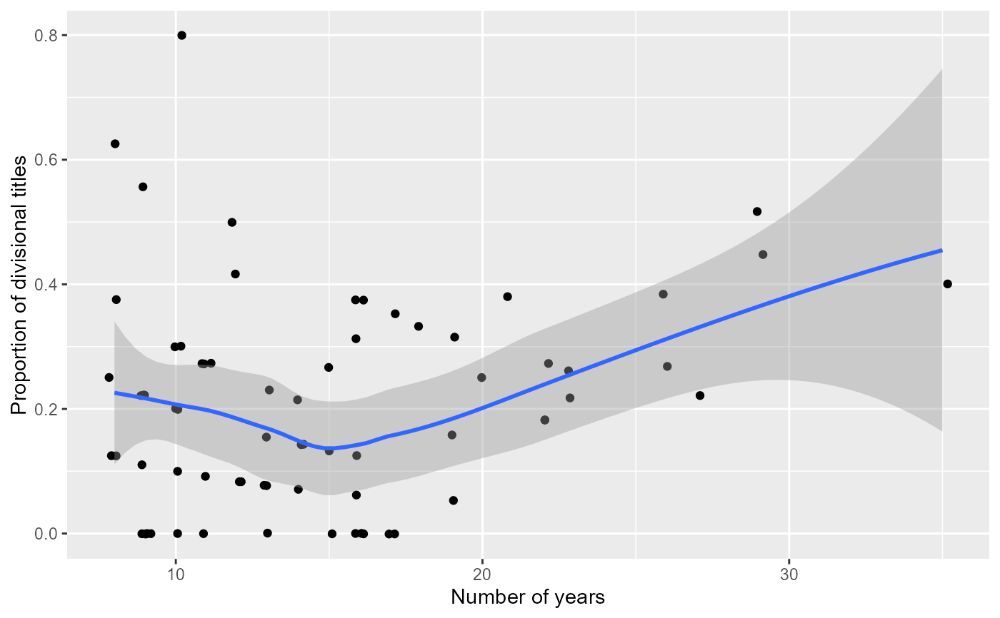

Managers table
Managers.RdManagers table: information about individual team managers, teams they managed and some basic statistics for those teams in each year.
Usage
data(Managers)Format
A data frame with 3749 observations on the following 10 variables.
playerIDManager (player) ID code
yearIDYear
teamIDTeam; a factor
lgIDLeague; a factor with levels
AAALFLNLPLUAinseasonManagerial order. Zero if the individual managed the team the entire year. Otherwise denotes where the manager appeared in the managerial order (1 for first manager, 2 for second, etc.)
GGames managed
WWins
LLosses
rankTeam's final position in standings that year
plyrMgrPlayer Manager (denoted by 'Y'); a factor with levels
NY
Source
Lahman, S. (2025) Lahman's Baseball Database, 1871-2024, 2025 version, https://sabr.org/lahman-database/
Examples
####################################
# Basic career summaries by manager
####################################
library("dplyr")
mgrSumm <- Managers %>%
group_by(playerID) %>%
summarise(nyear = length(unique(yearID)),
yearBegin = min(yearID),
yearEnd = max(yearID),
nTeams = length(unique(teamID)),
nfirst = sum(rank == 1L),
W = sum(W),
L = sum(L),
WinPct = round(W/(W + L), 3))
MgrInfo <- People %>%
filter(!is.na(playerID)) %>%
select(playerID, nameLast, nameFirst)
# Merge names into the table
mgrTotals <- right_join(MgrInfo, mgrSumm, by = "playerID")
# add total games managed
mgrTotals <- mgrTotals %>%
mutate(games = W + L)
##########################
# Some basic queries
##########################
# Top 20 managers in terms of years of service:
mgrTotals %>%
arrange(desc(nyear)) %>%
head(., 20)
#> playerID nameLast nameFirst nyear yearBegin yearEnd nTeams nfirst W
#> 1 mackco01 Mack Connie 53 1894 1950 2 9 3731
#> 2 larusto01 LaRussa Tony 35 1979 2022 3 14 2898
#> 3 mcgrajo01 McGraw John 33 1899 1932 3 11 2763
#> 4 coxbo01 Cox Bobby 29 1978 2010 2 15 2497
#> 5 harribu01 Harris Bucky 29 1924 1956 5 3 2158
#> 6 torrejo01 Torre Joe 29 1977 2010 5 13 2322
#> 7 andersp01 Anderson Sparky 26 1970 1995 2 7 2194
#> 8 bakerdu01 Baker Dusty 26 1993 2023 5 10 2169
#> 9 bochybr01 Bochy Bruce 26 1995 2023 3 6 2091
#> 10 mauchge01 Mauch Gene 26 1960 1987 4 2 1902
#> 11 mckecbi01 McKechnie Bill 25 1915 1946 5 4 1896
#> 12 stengca01 Stengel Casey 25 1934 1965 4 10 1905
#> 13 durocle01 Durocher Leo 24 1939 1973 4 3 2008
#> 14 mccarjo99 McCarthy Joe 24 1926 1950 3 9 2125
#> 15 alstowa01 Alston Walter 23 1954 1976 2 7 2040
#> 16 francte01 Francona Terry 23 1997 2023 3 5 1905
#> 17 pinielo01 Piniella Lou 23 1986 2010 5 6 1827
#> 18 wrighha01 Wright Harry 23 1871 1893 4 6 1225
#> 19 leylaji99 Leyland Jim 22 1986 2013 4 6 1769
#> 20 showabu99 Showalter Buck 22 1992 2023 5 4 1724
#> L WinPct games
#> 1 3948 0.486 7679
#> 2 2509 0.536 5407
#> 3 1948 0.586 4711
#> 4 1999 0.555 4496
#> 5 2219 0.493 4377
#> 6 1995 0.538 4317
#> 7 1834 0.545 4028
#> 8 1858 0.539 4027
#> 9 2100 0.499 4191
#> 10 2037 0.483 3939
#> 11 1723 0.524 3619
#> 12 1842 0.508 3747
#> 13 1709 0.540 3717
#> 14 1333 0.615 3458
#> 15 1613 0.558 3653
#> 16 1627 0.539 3532
#> 17 1709 0.517 3536
#> 18 885 0.581 2110
#> 19 1724 0.506 3493
#> 20 1661 0.509 3385
# Top 20 winningest managers (500 games minimum)
mgrTotals %>%
filter((W + L) >= 500) %>%
arrange(desc(WinPct)) %>%
head(., 20)
#> playerID nameLast nameFirst nyear yearBegin yearEnd nTeams nfirst W
#> 1 roberda07 Roberts Dave 9 2015 2023 2 7 753
#> 2 mccarjo99 McCarthy Joe 24 1926 1950 3 9 2125
#> 3 mutriji99 Mutrie Jim 9 1883 1891 2 3 658
#> 4 comisch01 Comiskey Charlie 12 1883 1894 3 4 840
#> 5 seleefr99 Selee Frank 16 1890 1905 2 5 1284
#> 6 southbi01 Southworth Billy 13 1929 1951 2 4 1044
#> 7 chancfr01 Chance Frank 11 1905 1923 3 4 946
#> 8 booneaa01 Boone Aaron 6 2018 2023 1 2 509
#> 9 mcgrajo01 McGraw John 33 1899 1932 3 11 2763
#> 10 lopezal01 Lopez Al 17 1951 1969 2 2 1410
#> 11 weaveea99 Weaver Earl 17 1968 1986 1 6 1480
#> 12 cochrmi01 Cochrane Mickey 5 1934 1938 1 2 348
#> 13 wrighha01 Wright Harry 23 1871 1893 4 6 1225
#> 14 ansonca01 Anson Cap 21 1875 1898 3 5 1296
#> 15 dyered01 Dyer Eddie 5 1946 1950 1 1 446
#> 16 rowlapa99 Rowland Pants 4 1915 1918 1 1 339
#> 17 clarkfr01 Clarke Fred 19 1897 1915 2 4 1602
#> 18 mcgunbi01 McGunnigle Bill 5 1888 1896 4 2 327
#> 19 wardjo01 Ward John 7 1880 1894 4 0 412
#> 20 johnsda02 Johnson Davey 17 1984 2013 5 6 1369
#> L WinPct games
#> 1 443 0.630 1196
#> 2 1333 0.615 3458
#> 3 419 0.611 1077
#> 4 541 0.608 1381
#> 5 862 0.598 2146
#> 6 704 0.597 1748
#> 7 648 0.593 1594
#> 8 360 0.586 869
#> 9 1948 0.586 4711
#> 10 1004 0.584 2414
#> 11 1060 0.583 2540
#> 12 250 0.582 598
#> 13 885 0.581 2110
#> 14 947 0.578 2243
#> 15 325 0.578 771
#> 16 247 0.578 586
#> 17 1181 0.576 2783
#> 18 248 0.569 575
#> 19 320 0.563 732
#> 20 1070 0.561 2439
# Most of these are 19th century managers.
# How about the modern era?
mgrTotals %>%
filter(yearBegin >= 1901 & (W + L) >= 500) %>%
arrange(desc(WinPct)) %>%
head(., 20)
#> playerID nameLast nameFirst nyear yearBegin yearEnd nTeams nfirst W
#> 1 roberda07 Roberts Dave 9 2015 2023 2 7 753
#> 2 mccarjo99 McCarthy Joe 24 1926 1950 3 9 2125
#> 3 southbi01 Southworth Billy 13 1929 1951 2 4 1044
#> 4 chancfr01 Chance Frank 11 1905 1923 3 4 946
#> 5 booneaa01 Boone Aaron 6 2018 2023 1 2 509
#> 6 lopezal01 Lopez Al 17 1951 1969 2 2 1410
#> 7 weaveea99 Weaver Earl 17 1968 1986 1 6 1480
#> 8 cochrmi01 Cochrane Mickey 5 1934 1938 1 2 348
#> 9 dyered01 Dyer Eddie 5 1946 1950 1 1 446
#> 10 rowlapa99 Rowland Pants 4 1915 1918 1 1 339
#> 11 johnsda02 Johnson Davey 17 1984 2013 5 6 1369
#> 12 moranpa01 Moran Pat 9 1915 1923 2 2 748
#> 13 oneilst01 O'Neill Steve 14 1935 1954 4 1 1040
#> 14 snitkbr99 Snitker Brian 8 2016 2023 1 5 646
#> 15 alstowa01 Alston Walter 23 1954 1976 2 7 2040
#> 16 dierkla01 Dierker Larry 5 1997 2001 1 4 435
#> 17 coxbo01 Cox Bobby 29 1978 2010 2 15 2497
#> 18 huggimi01 Huggins Miller 17 1913 1929 2 6 1413
#> 19 littlgr99 Little Grady 6 2000 2007 3 1 377
#> 20 terrybi01 Terry Bill 10 1932 1941 1 3 823
#> L WinPct games
#> 1 443 0.630 1196
#> 2 1333 0.615 3458
#> 3 704 0.597 1748
#> 4 648 0.593 1594
#> 5 360 0.586 869
#> 6 1004 0.584 2414
#> 7 1060 0.583 2540
#> 8 250 0.582 598
#> 9 325 0.578 771
#> 10 247 0.578 586
#> 11 1070 0.561 2439
#> 12 586 0.561 1334
#> 13 821 0.559 1861
#> 14 509 0.559 1155
#> 15 1613 0.558 3653
#> 16 348 0.556 783
#> 17 1999 0.555 4496
#> 18 1134 0.555 2547
#> 19 302 0.555 679
#> 20 661 0.555 1484
# Top 10 managers in terms of percentage of titles
# (league or divisional) - should bias toward managers
# post-1970 since more first place finishes are available
mgrTotals %>%
filter(yearBegin >= 1901 & (W + L) >= 500) %>%
arrange(desc(round(nfirst/nyear, 3))) %>%
head(., 10)
#> playerID nameLast nameFirst nyear yearBegin yearEnd nTeams nfirst W L
#> 1 dierkla01 Dierker Larry 5 1997 2001 1 4 435 348
#> 2 roberda07 Roberts Dave 9 2015 2023 2 7 753 443
#> 3 howsedi01 Howser Dick 8 1978 1986 2 5 507 425
#> 4 snitkbr99 Snitker Brian 8 2016 2023 1 5 646 509
#> 5 baldero01 Baldelli Rocco 5 2019 2023 1 3 371 332
#> 6 freyji99 Frey Jim 5 1980 1986 2 3 323 287
#> 7 coxbo01 Cox Bobby 29 1978 2010 2 15 2497 1999
#> 8 banisje01 Banister Jeff 4 2015 2018 1 2 325 313
#> 9 brenlbo01 Brenly Bob 4 2001 2004 1 2 303 262
#> 10 kenneke99 Kennedy Kevin 4 1993 1996 2 2 309 273
#> WinPct games
#> 1 0.556 783
#> 2 0.630 1196
#> 3 0.544 932
#> 4 0.559 1155
#> 5 0.528 703
#> 6 0.530 610
#> 7 0.555 4496
#> 8 0.509 638
#> 9 0.536 565
#> 10 0.531 582
# How about pre-1969?
mgrTotals %>%
filter(yearBegin >= 1901 & yearEnd <= 1969 &
(W + L) >= 500) %>%
arrange(desc(round(nfirst/nyear, 3))) %>%
head(., 10)
#> playerID nameLast nameFirst nyear yearBegin yearEnd nTeams nfirst W
#> 1 cochrmi01 Cochrane Mickey 5 1934 1938 1 2 348
#> 2 stengca01 Stengel Casey 25 1934 1965 4 10 1905
#> 3 mccarjo99 McCarthy Joe 24 1926 1950 3 9 2125
#> 4 chancfr01 Chance Frank 11 1905 1923 3 4 946
#> 5 huggimi01 Huggins Miller 17 1913 1929 2 6 1413
#> 6 colliji01 Collins Jimmy 6 1901 1906 1 2 455
#> 7 streega01 Street Gabby 6 1929 1938 2 2 365
#> 8 southbi01 Southworth Billy 13 1929 1951 2 4 1044
#> 9 terrybi01 Terry Bill 10 1932 1941 1 3 823
#> 10 carribi02 Carrigan Bill 7 1913 1929 1 2 489
#> L WinPct games
#> 1 250 0.582 598
#> 2 1842 0.508 3747
#> 3 1333 0.615 3458
#> 4 648 0.593 1594
#> 5 1134 0.555 2547
#> 6 376 0.548 831
#> 7 332 0.524 697
#> 8 704 0.597 1748
#> 9 661 0.555 1484
#> 10 500 0.494 989
## Tony LaRussa's managerial record by team
Managers %>%
filter(playerID == "larusto01") %>%
group_by(teamID) %>%
summarise(nyear = length(unique(yearID)),
yearBegin = min(yearID),
yearEnd = max(yearID),
games = sum(G),
nfirst = sum(rank == 1L),
W = sum(W),
L = sum(L),
WinPct = round(W/(W + L), 3))
#> # A tibble: 3 × 9
#> teamID nyear yearBegin yearEnd games nfirst W L WinPct
#> <fct> <int> <int> <int> <int> <int> <int> <int> <dbl>
#> 1 CHA 10 1979 2022 1357 2 695 659 0.513
#> 2 OAK 10 1986 1995 1471 4 798 673 0.542
#> 3 SLN 16 1996 2011 2582 8 1405 1177 0.544
##############################################
# Density plot of the number of games managed:
##############################################
library("ggplot2")
ggplot(mgrTotals, aes(x = games)) +
geom_density(fill = "red", alpha = 0.3) +
labs(x = "Number of games managed")
# Who managed more than 4000 games?
mgrTotals %>%
filter(W + L >= 4000) %>%
arrange(desc(W + L))
#> playerID nameLast nameFirst nyear yearBegin yearEnd nTeams nfirst W L
#> 1 mackco01 Mack Connie 53 1894 1950 2 9 3731 3948
#> 2 larusto01 LaRussa Tony 35 1979 2022 3 14 2898 2509
#> 3 mcgrajo01 McGraw John 33 1899 1932 3 11 2763 1948
#> 4 coxbo01 Cox Bobby 29 1978 2010 2 15 2497 1999
#> 5 harribu01 Harris Bucky 29 1924 1956 5 3 2158 2219
#> 6 torrejo01 Torre Joe 29 1977 2010 5 13 2322 1995
#> 7 bochybr01 Bochy Bruce 26 1995 2023 3 6 2091 2100
#> 8 andersp01 Anderson Sparky 26 1970 1995 2 7 2194 1834
#> 9 bakerdu01 Baker Dusty 26 1993 2023 5 10 2169 1858
#> WinPct games
#> 1 0.486 7679
#> 2 0.536 5407
#> 3 0.586 4711
#> 4 0.555 4496
#> 5 0.493 4377
#> 6 0.538 4317
#> 7 0.499 4191
#> 8 0.545 4028
#> 9 0.539 4027
# Connie Mack's advantage: he owned the Philadelphia A's :)
# Table of Tony LaRussa's team finishes (rank order):
Managers %>%
filter(playerID == "larusto01") %>%
count(rank)
#> rank n
#> 1 1 14
#> 2 2 4
#> 3 3 8
#> 4 4 5
#> 5 5 4
#> 6 7 1
##############################################
# Scatterplot of winning percentage vs. number
# of games managed (min 100)
##############################################
ggplot(subset(mgrTotals, yearBegin >= 1900 & games >= 100),
aes(x = games, y = WinPct)) +
geom_point() + geom_smooth() +
labs(x = "Number of games managed")
#> `geom_smooth()` using method = 'loess' and formula = 'y ~ x'
############################################
# Division titles
############################################
# Plot of number of first place finishes by managers who
# started in the divisional era (>= 1969) with
# at least 8 years of experience
mgrTotals %>%
filter(yearBegin >= 1969 & nyear >= 8) %>%
ggplot(., aes(x = nyear, y = nfirst)) +
geom_point(position = position_jitter(width = 0.2)) +
labs(x = "Number of years",
y = "Number of divisional titles") +
geom_smooth()
#> `geom_smooth()` using method = 'loess' and formula = 'y ~ x'
# Change response to proportion of titles relative
# to years managed
mgrTotals %>%
filter(yearBegin >= 1969 & nyear >= 8) %>%
ggplot(., aes(x = nyear, y = round(nfirst/nyear, 3))) +
geom_point(position = position_jitter(width = 0.2)) +
labs(x = "Number of years",
y = "Proportion of divisional titles") +
geom_smooth()
#> `geom_smooth()` using method = 'loess' and formula = 'y ~ x'
